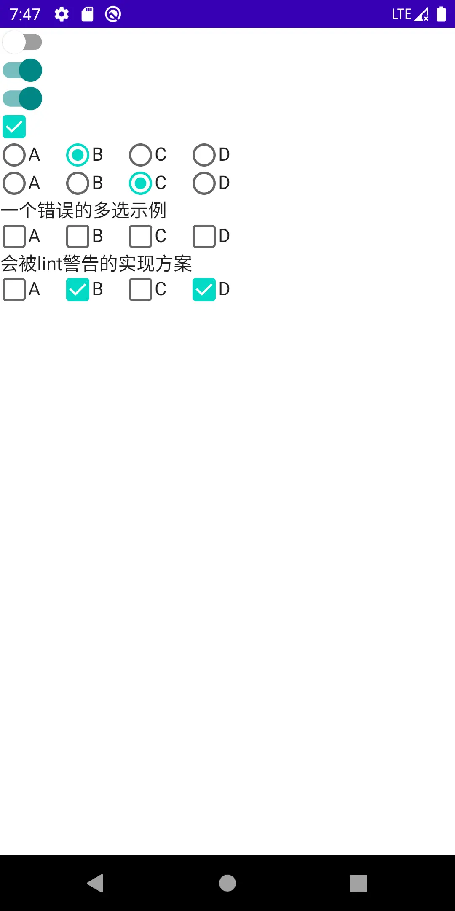

Jetpack Compose | 控件篇（三） -- Switch、CheckBox、RadioButton
写在最前
在之前的文章中，我们学习过Compose 中的 ImageButton。
本篇我们将继续学习 Switch 、 CheckBox 、RadioButton , 这三个控件在 人机交互界面 中也是由来已久。
文中代码均基于 1.0.1版本
如无特殊说明，文中的
Compose均指代Jetpack compose文中代码均可在 WorkShop 中获取，本篇代码集中于 post28 包下
完整系列目录: Github Pages | 掘金 | csdn
Switch
当功能含义如同 开关 一般时，我们可以使用该控件，例如："深色模式"、"飞行模式"
使用方式
fun Switch(
checked: Boolean,
onCheckedChange: ((Boolean) -> Unit)?,
modifier: Modifier = Modifier,
enabled: Boolean = true,
interactionSource: MutableInteractionSource = remember { MutableInteractionSource() },
colors: SwitchColors = SwitchDefaults.colors()
)
经过前面的学习，这些参数的含义应该不陌生了。
修改配色可以通过如下API构建 SwitchColors 对象实例
object SwitchDefaults {
fun colors(
checkedThumbColor: Color = MaterialTheme.colors.secondaryVariant,
checkedTrackColor: Color = checkedThumbColor,
checkedTrackAlpha: Float = 0.54f,
uncheckedThumbColor: Color = MaterialTheme.colors.surface,
uncheckedTrackColor: Color = MaterialTheme.colors.onSurface,
uncheckedTrackAlpha: Float = 0.38f,
disabledCheckedThumbColor: Color = checkedThumbColor
.copy(alpha = ContentAlpha.disabled)
.compositeOver(MaterialTheme.colors.surface),
disabledCheckedTrackColor: Color = checkedTrackColor
.copy(alpha = ContentAlpha.disabled)
.compositeOver(MaterialTheme.colors.surface),
disabledUncheckedThumbColor: Color = uncheckedThumbColor
.copy(alpha = ContentAlpha.disabled)
.compositeOver(MaterialTheme.colors.surface),
disabledUncheckedTrackColor: Color = uncheckedTrackColor
.copy(alpha = ContentAlpha.disabled)
.compositeOver(MaterialTheme.colors.surface)
): SwitchColors
}
结合前文学习的知识，我们不难推测，下述的代码并不能真正起到 开关 的功能：
Switch(checked = false, onCheckedChange = {
Log.d("tag", "onCheckChanged:$it")
})
实际效果可体验WorkShop
我们需要构建一个 "被观测" 的数据源 [注意：这个说法虽然比较形象但并不准确] ，它被 Compose构建的树的节点 所观测，即 该Switch，当其内容发生变化
后，可反映到UI上。
例如：
var checked by rememberSaveable { mutableStateOf(false) }
Switch(checked = checked, onCheckedChange = {
checked = it
Log.d("tag", "onCheckChanged:$it")
})
或者：
val checked = remember { mutableStateOf(false) }
Switch(checked = checked.value, onCheckedChange = {
checked.value = it
Log.d("tag", "onCheckChanged:$it")
})
当然，按照Compose的用法，这些函数必须要同时存在于 @Compose 的函数块中，这样才能被目标节点所 "观测"
效果将在文末给出
CheckBox
当形式为：选中/不选中 时，可以使用该控件。
使用方式
fun Checkbox(
checked: Boolean,
onCheckedChange: ((Boolean) -> Unit)?,
modifier: Modifier = Modifier,
enabled: Boolean = true,
interactionSource: MutableInteractionSource = remember { MutableInteractionSource() },
colors: CheckboxColors = CheckboxDefaults.colors()
)
和 Switch 非常相似，同样的，我们可以修改配色：
object CheckboxDefaults {
@Composable
fun colors(
checkedColor: Color = MaterialTheme.colors.secondary,
uncheckedColor: Color = MaterialTheme.colors.onSurface.copy(alpha = 0.6f),
checkmarkColor: Color = MaterialTheme.colors.surface,
disabledColor: Color = MaterialTheme.colors.onSurface.copy(alpha = ContentAlpha.disabled),
disabledIndeterminateColor: Color = checkedColor.copy(alpha = ContentAlpha.disabled)
): CheckboxColors
}
至此，我们意识到，Compose 固定了 Switch , Checkbox 的样式风格，如果定制图标，可以使用 ImageButton 。
如下代码将得到一个最简单可用的 CheckBox
var checked by rememberSaveable { mutableStateOf(false) }
Checkbox(checked = checked, onCheckedChange = {
checked = it
Log.d("tag", "onCheckChanged:$it")
})
不同于Android原生控件，
Compose中的Checkbox无法添加文字 -- 这很 Compose!.Compose 贯穿始终的一个原则就是
组合， 显然：文字部分应该使用 Text。
RadioButton
Compose 中并没有 RadioButtonGroup 的内容。 也有可能是我没有找到。
但是，这并不重要！Compose 并不推崇在控件内部维护状态，否则会违背 纯函数 的理念。而且，我们可以很轻易地利用 组合 方式外挂一段逻辑，实现单选。
注意：按照一般性的UI设计语言，多选应该利用Checkbox，实现思路有类似之处
如何使用
@Composable
fun RadioButton(
selected: Boolean,
onClick: (() -> Unit)?,
modifier: Modifier = Modifier,
enabled: Boolean = true,
interactionSource: MutableInteractionSource = remember { MutableInteractionSource() },
colors: RadioButtonColors = RadioButtonDefaults.colors()
)
和前两者不同，RadioButton 的回调函数是 点击回调 含义。
遵照UI设计语言，被点击则意味着 选中，而在单选中，通过逻辑保持该组仅目标项被选中。
通过以下API可以修改配色
object RadioButtonDefaults {
@Composable
fun colors(
selectedColor: Color = MaterialTheme.colors.secondary,
unselectedColor: Color = MaterialTheme.colors.onSurface.copy(alpha = 0.6f),
disabledColor: Color = MaterialTheme.colors.onSurface.copy(alpha = ContentAlpha.disabled)
): RadioButtonColors
}
构建一个单选组：
val tags = arrayListOf("A", "B", "C", "D")
val selectedTag = remember { mutableStateOf("") }
Row {
tags.forEach {
Row {
RadioButton(
selected = it == selectedTag.value,
onClick = {
selectedTag.value = it
}
)
Text(text = it)
}
Spacer(modifier = Modifier.width(20.dp))
}
}
同样，读者可以按照喜好利用代理的方式创建 可观测数据源
val tags = arrayListOf("A", "B", "C", "D")
var selectedTag by rememberSaveable { mutableStateOf("") }
Row {
tags.forEach {
Row {
RadioButton(
selected = selectedTag == it,
onClick = {
selectedTag = it
}
)
Text(text = it,modifier = Modifier.clickable {
selectedTag = it
})
}
Spacer(modifier = Modifier.width(20.dp))
}
}
而且，按照UX的设计风格，可以灵活的为文字部分添加触发。
思考：如下代码可以实现多选吗？
val tags = arrayListOf("A", "B", "C", "D")
var selectedItems by rememberSaveable { mutableStateOf(linkedSetOf<String>()) }
Row {
tags.forEach {
Row {
Checkbox(checked = selectedItems.contains(it), onCheckedChange = {selected->
if (selected) {
selectedItems.add(it)
} else {
selectedItems.remove(it)
}
Log.d("tag", "onCheckChanged:$it,$selected")
})
Text(text = it)
}
Spacer(modifier = Modifier.width(20.dp))
}
}
当然不可以！Set 集合内容的变化并无法被观测！那么怎么处理呢？
以目前我们掌握的知识，可以：
- 利用位运算
- 添加一个观测源、组合判断，但这会被lint校验警告
//组合判断 会被警告的做法
val tags = arrayListOf("A", "B", "C", "D")
val selectedItems by rememberSaveable { mutableStateOf(linkedSetOf<String>()) }
var version by rememberSaveable { mutableStateOf(0) }
Row {
tags.forEach {
Row {
Checkbox(
checked = version != null && selectedItems.contains(it),
onCheckedChange = { selected ->
if (selected) {
selectedItems.add(it)
} else {
selectedItems.remove(it)
}
version++
Log.d("tag", "onCheckChanged:$it,$selected")
})
Text(text = it)
}
Spacer(modifier = Modifier.width(20.dp))
}
}
是否还有更加优雅的解法呢？我们先保留这一疑惑，使得我们的探索过程更加的
平稳、有趣， 而不必在开始阶段花费过多的精力。
效果

结语
很快又到了这一阶段，这意味着我们又掌握了新的知识，同时也产生了更多的疑惑，不过不用心急，所有的谜题最终都会解开。